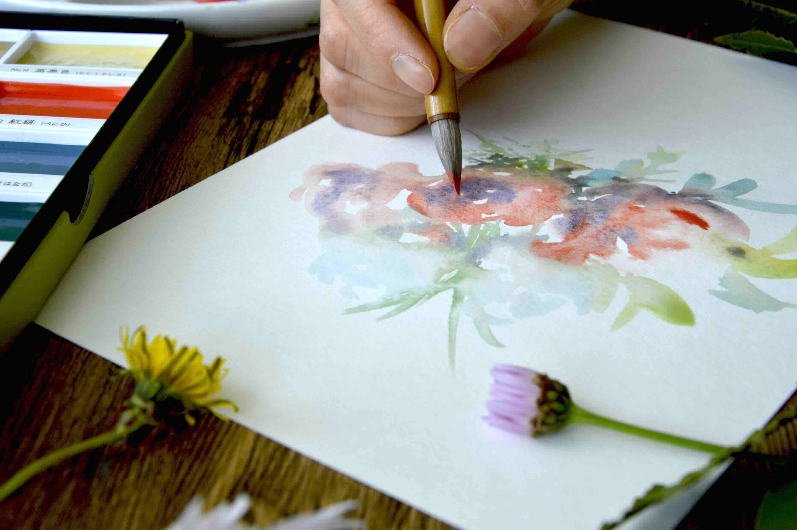

5 minutes to feel
creative again.
You don’t need more time, better supplies or a brilliant idea. Just five minutes to make a mark and see what happens.
Find a little prompt ↓ Nothing to finish. Nothing to get right.
✳let yourhands wander
One small prompt.
Five unhurried minutes.
Choose a starting point. There’s no special skill needed, and you can stop whenever you like.
Draw a tiny house for a very small creature. Add one window, one door, and anything else it might need.
See all 10 prompts in this collection
A pencil, a paintbrush, or whatever is nearby. That’s enough.
Watch, make,
and let go.
Follow along with a few relaxed watercolor videos from Zen Beautiful. Dip in for an idea, or simply enjoy watching colour move.
Creativity, ready
when you are.
Thirty five-minute starts: 10 drawing prompts, 10 beginner watercolor exercises and 10 mindful noticing practices. Save your favourite ideas for a day when you need a nudge.
We’re gathering the prompts and demonstrations into one lovely place.